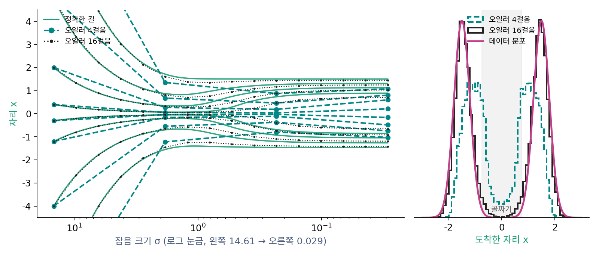

샘플러: 같은 길을 걷는 여러 걸음법
이 장의 물음
그림 생성 도구 ComfyUI에서 그림을 만드는 마디(KSampler)를 열면, 신경망과 프롬프트 말고도 고를 칸이 셋 더 있다. 걸음 수(steps, 기본 20), 샘플러 이름(sampler_name), 걸음 일정 이름(scheduler)이다. 샘플러 칸에는 euler, euler_ancestral, heun, dpmpp_2m, ddim을 비롯해 이름이 마흔네 개 있고, 걸음 일정 칸에는 normal, karras, exponential 등 아홉 개가 있다(2026년 8월의 ComfyUI 코드 comfy/samplers.py 기준). 같은 신경망, 같은 프롬프트, 같은 시드로 이 칸만 바꿔도 그림이 달라진다. 어떤 조합은 20걸음에 깔끔한 그림을 내고, 어떤 조합은 같은 20걸음에도 뭉개진 그림을 낸다.
잡음에서 데이터로 가는 길은 이미 식으로 정했다. 잡음 섞인 분포가 퍼지는 흐름을 거꾸로 따라가는 길(확률 흐름 ODE)이 있고, 걸음마다 잡음을 다시 조금씩 넣으며 걷는 길(역방향 SDE)도 같은 분포에 닿는다. 플로우 매칭은 그 길의 속도장을 통째로 배웠다. 그런데 이 식들은 시간이 끊김 없이 흐른다고 보고 쓴 것이다. 컴퓨터는 몇 번의 걸음으로 끊어 걸을 수밖에 없고, 한 걸음마다 수억 개의 매개변수를 가진 신경망을 한 번씩 불러야 한다. 길은 하나인데 걷는 법이 마흔 가지가 넘는 까닭이 여기 있다.
- 길을 걸음으로 끊으면 무엇이 틀어지고, 걸음을 늘리면 얼마나 나아질까?
- 걸음마다 잡음을 다시 넣는 샘플러와 넣지 않는 샘플러는 같은 분포에 닿는데, 무엇이 다를까?
- 신경망을 부르는 횟수를 늘리지 않고 한 걸음을 더 정확하게 걸을 수는 없을까?
- 같은 걸음 수라도 걸음을 어느 잡음 크기에 디디느냐에 따라 결과가 왜 달라질까?
- 여러 걸음을 한두 걸음으로 줄일 수는 없을까?
오일러 방법: 지금 자리의 기울기로 곧게 한 걸음
흐름을 거꾸로 따라가는 길은 점의 자리 x가 잡음 수준에 따라 어떻게 바뀌어야 하는지를 정한다. 그러나 그 식은 매 순간의 기울기만 알려 줄 뿐, 잡음 크기 14.61에서 출발한 점이 0에 닿았을 때 어디에 있는지를 바로 알려 주지는 않는다. 장난감에서는 촘촘한 수치 계산으로 길을 따라갈 수 있었지만, 그림 생성에서 기울기를 한 번 읽는다는 것은 그림 크기의 신경망을 한 번 돌린다는 뜻이다. 잘게 쪼갤수록 정확하겠지만 그만큼 느리다. 몇 걸음으로 끊으면 충분하고, 한 걸음은 어떻게 디뎌야 할까?
역사: 꺾은선으로 곡선을 어림하기
미분방정식은 대부분 식으로 풀리지 않는다. 오일러(Leonhard Euler)는 1768–1770년에 펴낸 『적분학 원론(Institutionum calculi integralis)』에서 가장 단순한 길을 냈다. 짧은 구간 안에서는 기울기가 거의 바뀌지 않는다고 보고, 지금 자리의 기울기로 한 구간을 곧게 나아간 뒤, 도착한 자리에서 기울기를 다시 읽어 다음 구간을 나아간다. 곡선이 꺾은선이 된다. 구간을 잘게 나눌수록 꺾은선은 곡선에 다가가지만, 오일러의 방법은 구간을 절반으로 줄여도 오차가 절반으로만 줄어든다.
디퓨전 모델은 처음에는 이 물음을 따로 다루지 않았다. 2020년의 DDPM은 학습 때 쓴 1000걸음을 생성 때도 모두 걸어, 그림 한 장에 신경망을 1000번 불렀다. 걸음을 고르는 일이 미분방정식을 푸는 오래된 수치 해법의 문제와 같다는 생각이 퍼지면서, 2022년 카라스(Tero Karras)와 동료들은 디퓨전 샘플러들을 한 틀로 다시 적었다. 그들의 식에서 잡음 크기 σ를 시간처럼 쓰면 길의 기울기는 (x − x̂₀)/σ가 되고, 논문은 「어느 자리에서든 σ = 0까지 오일러 한 걸음을 가면 잡음을 걷어 낸 그림이 나온다」고 적었다.
길의 기울기는 읽은 잡음이다
잡음을 그림에 그대로 더하는 꼴(xσ = x₀ + σε, 그림 생성 도구가 모든 잡음 일정을 맞춰 쓰는 눈금)에서 길을 적자. 흐름을 거꾸로 따라가는 길은 dx/dt = −Ds였다. 잡음 분산이 σ² = 2Dt로 쌓이므로 dσ/dt = D/σ이고, 시간 대신 잡음 크기로 미분하면 dx/dσ = −σs가 된다. 여기에 트위디 공식 σ²s = x̂₀ − x를 넣으면 스코어가 사라진다.
길의 기울기는 「지금 자리에 섞여 있다고 읽은 잡음」이다. 잡음 크기를 조금 줄이면 그 잡음을 그만큼 덜어 내면 된다. 오일러의 생각대로 이 기울기를 한 걸음 동안 고정하면, 잡음 크기 σi에서 σi+1로 가는 한 걸음은 다음과 같다.
오른쪽 끝의 꼴이 이 걸음의 뜻을 보여 준다. 지금 자리에서 원래 그림 x̂₀와 섞인 잡음 ε̂을 한 번 읽고, 둘을 그대로 둔 채 다음 잡음 크기 σi+1의 비율로 다시 섞는다. 이렇게 지금 자리의 기울기로 다음 자리까지 곧게 가는 걸음법을 오일러 방법 (지금 자리의 기울기로 곧게 한 걸음 / Euler method)이라 한다. 걸음마다 신경망을 한 번 부르므로, 걸음 수가 곧 신경망 호출 수다.
두 봉우리에서 걸어 보기
정확한 x̂₀를 식으로 아는 장난감에서 걸어 보자. 데이터는 ±1.5에 봉우리를 둔 두 봉우리 분포(봉우리마다 표준편차 0.3, 반반)다. 봉우리 사이의 골짜기(|x| < 0.75)에는 데이터가 0.8%만 있으니, 도착한 점이 골짜기에 얼마나 떨어지는지로 걸음의 질을 쉽게 볼 수 있다. 잡음 크기는 그림 생성 도구가 Stable Diffusion 1.x 에 쓰는 범위(가장 큰 값 14.61, 가장 작은 값 0.0292)를 그대로 쓰고, 걸음은 잡음 크기를 같은 비율로 줄여 가며 디딘다(어디에 디딜지는 뒤에서 따로 다룬다). 마지막 걸음은 0.0292에서 0으로 가는 걸음이다.
import numpy as np
mus, s0 = np.array([-1.5, 1.5]), 0.3 # 데이터: 두 봉우리 ±1.5, 폭(표준편차) 0.3, 반반
def x0hat(x, sig): # 정확한 E[x₀ | x]: 봉우리마다의 짐작을 책임도로 섞는다
v = s0**2 + sig**2
lw = -(x[:, None] - mus)**2 / (2 * v)
g = np.exp(lw - lw.max(1, keepdims=True)); g /= g.sum(1, keepdims=True)
return (g * (mus + s0**2 / v * (x[:, None] - mus))).sum(1)
def euler(x, sigmas): # ComfyUI sample_euler 와 같은 식
for s, s_next in zip(sigmas[:-1], sigmas[1:]):
d = (x - x0hat(x, s)) / s # 기울기 = 지금 자리에서 읽은 잡음 ε̂
x = x + d * (s_next - s)
return x
smin, smax = 0.029167, 14.614641 # SD 1.x 의 가장 작은·큰 σ (ComfyUI 기본값)
rng = np.random.default_rng(0)
x0 = mus[rng.choice(2, 20000, p=[0.5, 0.5])] + s0 * rng.standard_normal(20000)
start = x0 + smax * rng.standard_normal(20000) # 출발: 잡음 14.61 을 섞은 데이터
for n in [1, 4, 16, 64]:
sigmas = np.append(np.exp(np.linspace(np.log(smax), np.log(smin), n)), 0.0) # σ 를 같은 비율로 줄여 가며
x = euler(start.copy(), sigmas)
print(f"{n:2d}걸음: 골짜기 |x| < 0.75 에 떨어진 비율 {np.mean(np.abs(x) < 0.75):.3f}")
print(f"데이터: 골짜기 비율 {np.mean(np.abs(x0) < 0.75):.3f}")
# 1걸음: 골짜기 |x| < 0.75 에 떨어진 비율 1.000
# 4걸음: 골짜기 |x| < 0.75 에 떨어진 비율 0.214
# 16걸음: 골짜기 |x| < 0.75 에 떨어진 비율 0.028
# 64걸음: 골짜기 |x| < 0.75 에 떨어진 비율 0.011
# 데이터: 골짜기 비율 0.008
한 걸음이면 모든 점이 골짜기에 떨어진다. 14.61에서 0까지 한 번에 가는 오일러 걸음은 위 식에서 σi+1 = 0을 넣은 것, 곧 x̂₀로 바로 뛰는 것이다. 잡음이 이렇게 짙으면 어느 봉우리에서 왔는지 거의 알 수 없으니 x̂₀는 두 봉우리의 한가운데다. 출발점 x = 6에서 읽은 x̂₀는 0.066이다. 같은 점이 정확한 길을 따라가면 1.358에 닿는데, 오일러 4걸음은 0.867, 16걸음은 1.298에 닿는다. 걸음을 늘리면 길에 다가가지만 천천히 다가간다.

ML에서: 오일러 걸음은 모델의 출력 꼴과 상관없다
ComfyUI 의 sample_euler 는 위 코드와 같은 두 줄이다. to_d(x, sigma, denoised) 가 (x − x̂₀)/σ를 계산하고, x = x + d * dt 가 한 걸음을 간다. 모델이 잡음을 내놓든 원래 그림을 내놓든, 샘플러에 넘기기 전에 원래 그림의 어림 x̂₀로 바꿔 두기 때문에 같은 코드가 모든 모델에 쓰인다. 직선 경로로 학습한 플로우 매칭 모델(FLUX 등)에서는 잡음 크기가 1에서 0으로 줄고, 같은 계산이 속도장 v를 따라 오일러 걸음을 가는 것과 똑같아진다. 직선 경로 xt = (1 − t)x₀ + tε에서 읽은 x̂₀와 ε̂을 다음 시간의 비율 (1 − t′, t′)로 다시 섞으면 xt + (t′ − t)(ε̂ − x̂₀)가 되고, ε̂ − x̂₀가 곧 그 자리의 속도다.
문제 1. 1년에 몇 번 이자를 붙이나
원금 1을 연이율 100%로 1년 맡긴다. 이자를 1년에 n번 나눠 붙이면(한 번에 100/n %씩, 붙은 이자에도 다음 이자가 붙는다) 1년 뒤 금액은 (1 + 1/n)ⁿ이다. 이자를 끊임없이 붙이면 e = 2.71828…이 된다. (가) n = 1, 2, 4, 12, 365일 때 금액과 e와의 차이를 구하라. (나) n을 두 배로 늘릴 때 차이는 어떻게 줄어드는가?

한 번이면 2, 두 번이면 1.5² = 2.25, 네 번이면 2.4414, 열두 번이면 2.6130, 365번이면 2.7146이요. 차이는 0.718, 0.468, 0.277, 0.105, 0.0037이에요.

이자를 나눠 붙이는 일을 「돈이 불어나는 빠르기」로 보면 무엇을 하고 있는 걸까요?

금액이 자기 크기에 비례해 불어나는 식 dy/dt = y를 1/n 간격으로 끊어서, 구간 처음의 금액으로만 이자를 매기는 거예요. 구간 안에서 금액이 불어나는 건 무시하고요. 오일러 걸음이네.

아, 그래서 늘 모자라는구나. 구간 동안 금액이 커지는데 처음 금액으로만 계산하니까요. 차이를 보면 n이 12에서 24로 가면… 2.6637이라 0.054예요. 0.105의 거의 절반이에요.
n이 크면 차이는 대략 e/(2n)이에요. 걸음을 두 배로 늘리면 오차가 절반이 되는 것, 이것이 오일러 방법의 빠르기예요.
적금 앱이 「매일 이자」를 자랑하는 게 그래서 대단한 차이가 아니었네요. 매달에서 매일로 서른 배를 쪼개도 0.1이 0.004로 줄 뿐이고요.
문제 2. 가우시안 데이터에서 오일러가 만든 표본의 폭
데이터가 정규분포 N(0, 1)이면 원래 그림의 평균은 x̂₀ = x/(1 + σ²)로 식이 정해진다. (가) 이때 길의 기울기 (x − x̂₀)/σ를 x와 σ로 적고, 오일러 한 걸음이 x에 무엇을 곱하는지 구하라. (나) 잡음 크기 14.61에서 출발해(이때 점들의 표준편차는 √(1 + 14.61²) = 14.64) 잡음 크기를 같은 비율로 줄이며 N = 1, 4, 8, 16, 32걸음을 걸으면 도착한 점들의 표준편차는 얼마인가? 정확한 길이면 1에 가깝다(0.9996). (풀어 본 뒤 위젯 1의 「문제 2 불러오기」로 확인해 보자.)
(가)는 (x − x/(1 + σ²))/σ = xσ/(1 + σ²)예요. 한 걸음은 x ← x(1 + (σi+1 − σi)σi/(1 + σi²))이고요. 걸음마다 모든 점에 같은 수를 곱하니까 표준편차도 그 수를 곱하면 돼요. (나)를 돌렸더니 1걸음 0.068, 4걸음 0.591, 8걸음 0.802, 16걸음 0.902, 32걸음 0.951이에요.

1걸음이 0.068이면 거의 한 점으로 뭉친 거네. 데이터는 표준편차가 1인데.
1걸음은 어디로 뛰는 걸음이었죠?

x̂₀로 바로 뛰는 걸음이에요. 14.61의 잡음 속에서 읽은 평균은 x/(1 + 213.6) = x/214.6이라 모든 점이 0 근처로 줄어들어요. 평균은 표본이 아니니까요. 걸음을 늘려도 늘 모자라는 건, 오일러 걸음이 걸음 처음의 기울기로만 가는데 이 길에서는 잡음이 줄수록 기울기가 커지기 때문이에요. 이자 문제랑 같은 방향으로 모자라요.

모자란 몫이 8걸음 0.198, 16걸음 0.098, 32걸음 0.049예요. 여기서도 두 배마다 절반이에요.

그래요. 오일러 걸음이 적으면 표본이 데이터보다 좁게, 곧 평균 쪽으로 뭉쳐요. 그림이면 흐릿하고 밋밋한 쪽이에요.

수치해석 수업에서 오일러 방법의 전역 오차가 걸음 크기에 비례한다고 배운 게 이런 모습이네요.
문제 3. 로봇은 1초에 신경망을 몇 번 부르나
Physical Intelligence 의 로봇 모델 π0(2024)는 플로우 매칭으로 앞으로 할 동작 50개를 한 묶음으로 만든다. 논문에 따르면 묶음 하나는 잡음에서 출발해 오일러 방법 10걸음으로 만들고, 1초에 50번 움직이는 로봇에서는 동작 25개를 실행한 뒤(0.5초마다) 묶음을 새로 만든다. 논문의 표에 적힌 시간(RTX 4090)은 그림 인코더 14 ms, 관찰 읽기 32 ms, 동작 쪽 신경망 10번 27 ms다. (가) 1초에 신경망의 동작 쪽을 몇 번 부르는가? (나) 걸음을 늘리면 몇 걸음까지 0.5초 안에 묶음을 낼 수 있는가? (다) 시간을 아끼려고 1걸음으로 줄이면 무엇이 걱정되는가?
1초에 50번 움직이니까 묶음도 50번, 50 × 10 = 500번이요.
묶음 하나에 동작이 몇 개 들어 있고, 그중 몇 개를 쓰고 새로 만들죠?

50개를 만들고 25개, 0.5초 분량을 쓰고 새로 만들어요. 묶음은 1초에 두 번이라 2 × 10 = 20번이네요. (나)는 한 걸음이 27/10 = 2.7 ms이고, 걸음 수와 상관없는 몫이 14 + 32 = 46 ms니까 (500 − 46)/2.7 = 168걸음까지 돼요.

그럼 10걸음은 넉넉한 거네. (다)는 1걸음이면 평균으로 바로 뛰는 거잖아. 동작에서 평균이 뭐가 문제지?
장애물 앞에서 사람이 왼쪽으로 돌아간 기록과 오른쪽으로 돌아간 기록이 반반이라면, 두 기록의 평균은 어떤 동작이에요?
똑바로 가는 동작이요. 장애물에 부딪히는. 두 봉우리에서 1걸음이 골짜기에 떨어지던 것과 같네요.
조별 과제에서 두 사람 의견을 반씩 섞어 냈다가 둘 다 아닌 보고서가 된 거랑 같아요.